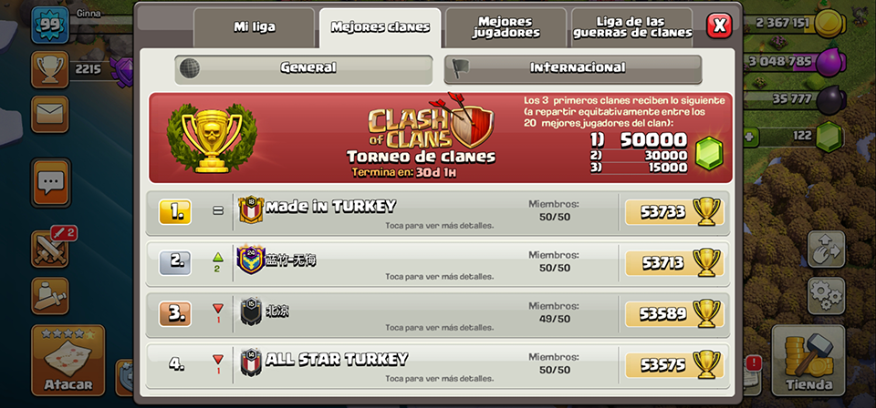

Clash of Clans es un videojuego de estrategia multijugador o de un jugador en el que el usuario debe construir una aldea. Entrenar tropas y elaborar hechizos para atacar a otras aldeas de jugadores en línea o a campañas de un jugador.
DESCARGARStorybrooke
Storybrooke es un clan del juego Clash of Clans (COC), en donde queremos aprender y crecer en los diferentes eventos que este juego nos presenta. Ser siempre los ganadores en cada batalla.
UNETEReglas
Guerra de clanes
Dos clanes luchan entre sí por un botín de guerra. Cada jugador que participe en la guerra puede realizar dos ataques contra dos miembros diferentes del clan enemigo.
- Primer ataque en espejo en las primeras doce horas.
- Segundo ataque libre en las doce horas restantes.
Juegos del clan

Son un evento en el que los miembros de un clan completan desafíos y consiguen increíbles recompensas.
- Completar los 4000 puntos.
- Quitar retos que pasen ocho horas sin completarse.
Liga de guerra de clanes
Una vez al mes, los clanes participan en temporadas de una semana de duración en las que luchan contra otros clanes con un nivel de destreza similar cada día de la semana.
- Colaborar con donaciones.
- El ataque se realiza en espejo.